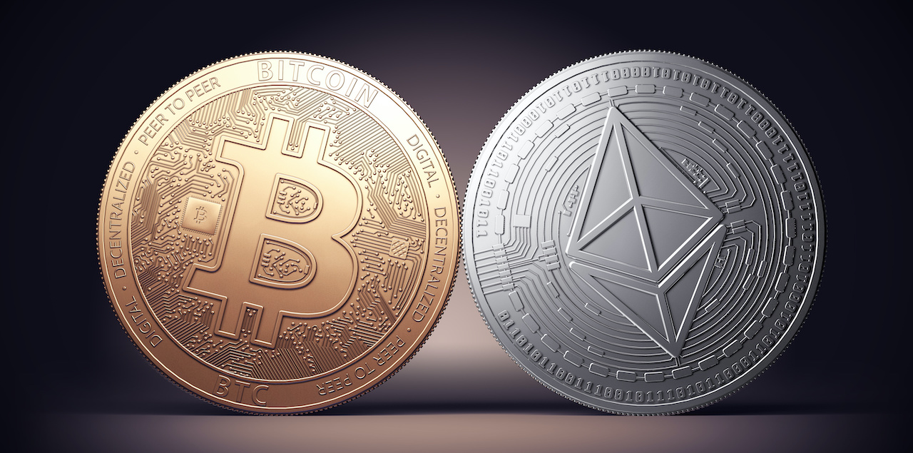

How does cryptocurrency work?
Cryptocurrencies themselves act as a medium for exchanging or for storing value or currency. Most cryptocurrency rely on or work on a ledger type systems the most used one being called blockchain. This blockchain technology helps record data and to keep track of all of the transactions being sent across the network. A blockchain is exactly what it sounds like, a virtual chain of blocks each containing a batch of transactions and other data. Once each block is added to the chain, it becomes immutable, meaning the data stored inside it cannot be changed, removed or hacked which makes it safe. Because cryptocurrencies are managed by a network of volunteer contributors known as “nodes” and not by a single intermediary, a system must be in place that ensures everyone participates honestly when recording and adding new data to the blockchain ledger.

The nodes perform a variety of roles on the network, from storing a full archive of all historical transactions to validating new transaction data. By having a distributed group of people all maintaining their own copy of the ledger, blockchain technology has the following advantages over traditional finance where a master copy is maintained by a single institution. There is no single point of failure, if one node fails it has zero impact on the blockchain ledger and there is no single source of truth that can be easily corrupted. The nodes manage the database and confirm new entries are valid transactions or real ones. Think of it as having a cluster of computers take up the roles of a bank by consistently updating the balance sheets of users.
In the case of distributed ledgers, however, the balance sheets aren’t stored in a single server. Instead, there are multiple copies of the balance sheets distributed across several computers, with each node, or computer connected to the network, functioning as a separate server. Therefore, even if one of the computers go offline, it wouldn’t be as detrimental as having a single server-based database go offline as can be the case in traditional banking systems.
This makes cryptocurrency avoid scams, mishaps or any hacking activity making it very protected. It is difficult to attack or manipulate this system because the attackers must gain control of over 50% of computers connected to the blockchain network. Depending on how big the network is, it can be prohibitively expensive to carry out a coordinated attack. If you compare the amount required to attack established cryptocurrencies like bitcoin and what the attacker stands to gain at the end of the day, pursuing such an endeavour wouldn’t be viable financially.
Why is cryptocurrency more popular in today's world
Firstly, the most notable is the decentralisation. Unlike fiat money that is backed by a country's government. Cryptocurrencies run on decentralised blockchain networks meaning it does not have a central authority thus giving individuals more control over their assets.
Secondly, its global accessibility. As long as you have access to the Internet, you can make international payments. Not to mention that it is faster, cheaper, and more accessible to people all around the world.
Furthermore, cryptocurrencies act as a medium of exchange. Many people believe that some cryptocurrencies, like Bitcoin, function as digital stores of value similar to precious metals like gold. This belief encourages individuals to invest in them, especially investors who are seeking alternative assets for the future.
Last but not least, cryptocurrencies, viewed as a new era of currency, have garnered attention due to relentless media coverage. The media coverage and widespread discussions about cryptocurrencies increased its popularity along the way, attracting even more curious individuals to explore it.
Which cryptocurrency is popular and why
There are many popular cryptocurrencies like Bitcoin (BTC), Ethereum (ETH), Tether (USDT) and Ripple (XRP). Each has their own unique features, but we will compare the two most widely known cryptocurrencies, which are Bitcoin and Ethereum

- Bitcoin
Bitcoin is the first ever cryptocurrency, introduced in 2009 by the name Satoshi Nakamoto, whose background still remains unknown. Being the first ever cryptocurrency, it started the entire cryptocurrency industry and gained significant attention. Bitcoin's underlying technology, blockchain, provides high level security through cryptographic techniques. Not to mention that Bitcoin has a capped supply of 21 million coins, which makes it scarce. This scarcity is the reason why it has the potential to store value similar to precious metals like gold. Thus, drawing everyone's attention, especially investors’ attention.
- Ethereum
Ethereum is just another cryptocurrency just like Bitcoin, however it’s more than just a medium of exchange or a store of value. Ethereum is a decentralized computing network built on blockchain technology which serves as a platform for developers to build decentralised applications (DApps) on it. DApps allows multiple participants to consume content or produce content, however once it’s posted it can never be deleted. Besides that, Ethereum is self-executing contracts, called smart contracts. It is just like any other conventional contracts except, once the contract conditions are met, it self-executes and delivers the goods to the other party.
In a nutshell, ethereum has better functionality than bitcoin. However in terms of popularity wise, Bitcoin prevailed.

Besides that, in the survey we conducted, we asked students which cryptocurrency students had bought or preferred. The results were that almost 90% of students who responded did not purchase any cryptocurrency, that is to be expected as students do not have the need to explore new financial alternatives. However, based on the chart, students who actually bought cryptocurrency prefer Bitcoin the most, followed by Ethereum.

How easy is it to obtain crypto currency?
This is a matter of whether you would first, want to invest in crypto or second, or see for yourself. If you are going to invest in cryptocurrency there are a few steps towards it.
- first, which cryptocurrency platform would you like to choose.
- There are many to select from. Generally, you can choose between a traditional broker or dedicated cryptocurrency exchange.
- Traditional brokers are online brokers who offer ways to buy and sell cryptocurrency, as well as other financial assets like stocks, bonds, and ETFs.
- Cryptocurrency exchanges on the other hand have many to choose from each offering different cryptocurrencies, wallet storage, interest-bearing account options, etc.
- When comparing, one often should consider which cryptocurrencies are on offer, what fees they charge, their security features, storage and withdrawal options and any other resources.
- After you have chosen your preferred platform, next comes the next step which is funding your account.
- Most cryptocurrencies allow the user to purchase crypto using Fiat (government issued) currency which is the currency of your country, and through your debit or credit cards you are able to purchase crypto.
- Placing an order on the selected crypto.
- So through your broker's or exchange's web or mobile platform you are able to purchase that aforementioned crypto.
- So on the mobile application or website itself there should be a guild to purchase crypto, like a button that says 'buy' and 'sell' and you have to mention the amount you would like to sell or buy.
- There are also other ways to invest in crypto. These include payment services like:
- PayPal
- Cash App
- Venmo
But that should be the gist of it. Just contact the broker itself or with a debit or credit card you can easily purchase on the selected cryptocurrency web application.